정보통신기사(구) (2021-03-13 기출문제)
1과목: 디지털 전자회로
1. 반도체 다이오드의 두 가지 바이어스(Bias) 조건으로 맞는 것은?
- 발진과 증폭
- 블록과 비블록
- 유도와 비유도
- 순방향과 역방향
(정답률: 85%)

2. 다음 그림과 같은 평활회로에서 출력 맥동률을 최소화하기 위한 방법으로 틀린 것은?
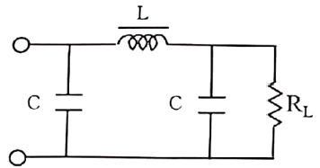
- 정류파형의 주파수를 높인다.
- L값을 크게 한다.
- C값을 크게 한다.
- RL값을 작게 한다.
(정답률: 76%)
3. 다음 회로에서 RL 양단에 나타나는 정류출력전압은? (단, 입력에는 최대치 Vm인 사인파가 인가된다.)
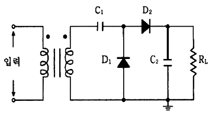
- -Vm
- Vm
- -2Vm
- 2Vm
(정답률: 70%)
4. 다음 중 드레인 접지형 FET 증폭기에 대한 특성으로 틀린 것은? (단, FET의 파라미터 Am은 상호 전도도이다.)
- 입력 임피던스는 매우 크다.
- 전압 이득은 약 1이다.
- 출력은 입력과 역위상이다.
- 출력 임피던스는 약 1/Am이다.
(정답률: 69%)
5. 다음 바이어스로 회로에서 전류 궤환 회로로 변경하려 한다. 어느 부분이 추가 또는 수정되어야 하나?
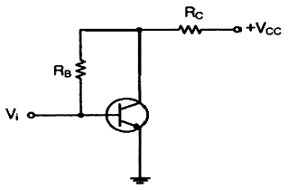
- RC
- RE
- RB
- RC, RE
(정답률: 63%)
6. 계단(Step)입력에 대한 연산증폭기의 출력파형이 아래 그림과 같다. 슬루율(Slew Rate)은?
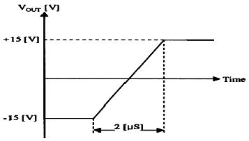
- 15[V/μS]
- 7.5[V/μS]
- 10[V/μS]
- 30[V/μS]
(정답률: 68%)
7. 다음 회로의 종류는?
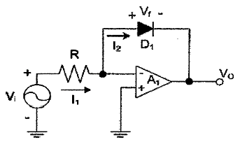
- 반파정류회로
- 전파정류회로
- 피크검출기
- 대수 증폭기회로
(정답률: 65%)
8. 다음 콜피츠 발진회가 발진하는 조건은?
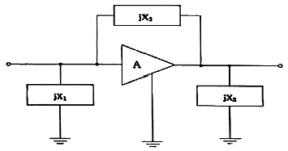
- jX1<0, jX2>0, jX3>0
- jX1<0, jX2<0, jX3<0
- jX1>0, jX2<0, jX3>0
- jX1<0, jX2<0, JX3>0
(정답률: 68%)
9. 병렬저항 이상형 RC발진회로에서 C=0.01[μF]일 때 1500[Hz]의 발진주파수를 얻기 위한 R값은 약 얼마인가?
- 1.51[kΩ]
- 2.52[kΩ]
- 3.23[kΩ]
- 4.33[kΩ]
(정답률: 51%)
10. 증폭기와 정궤환 회로를 이용한 발진회로에서 증폭기의 이득을 A, 궤환율을 β라고 할 때, βA<1이면 출력되는 파형은?
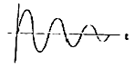
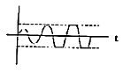
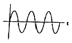
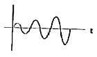
(정답률: 77%)
11. 다음 중 단측파대 변조 방식의 특징으로 틀린 것은?
- 점유주파수대역폭이 매우 작다.
- 변복조기 사이에 반송파의 동기가 필요하다.
- 송신출력이 비교적 작게 된다.
- 전송 도중에 복조되는 경우가 있다.
(정답률: 71%)
12. AM 복조(검파) 회로에서 직선 검파회로의 RC(시정수)가 반송파의 주기보다 짧은 경우에 일어나는 현상은?
- 중방전 특성이 늦어진다.
- 출력은 입력 전압의 반송파 진폭의 제곱에 비례하게 되며, 감도가 높아지게 된다.
- 방전이 빨리 일어나서 저항 R의 단자 전압변동이 크게 일어난다.
- 포락선의 변화에 추종하지 못한다.
(정답률: 64%)
13. 변조도80%로 진폭 변조한 피변조파에서 반송파의 전력 Pc와 상측파대 또는 하측파대의 전력 Ps와의 비율은?
- 1 : 0.8
- 1 : 0.55
- 1 : 0.33
- 1 : 0.16
(정답률: 56%)
14. 정보 전송에서 800[Baud]의 변조 속도로 4상 차분 위상 변조된 데이터 신호 속도는 얼마인가?
- 600[bps]
- 1200[bps]
- 1600[bps]
- 3200[bps]
(정답률: 74%)
15. 다음 회로에서 기전력 E를 가하고 S/W를 ON하였을 EO 저항 양단의 전압 VR은 t초 후 어떻게 표시되는가?
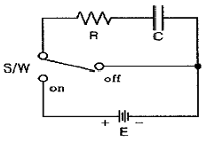
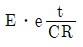
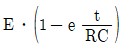
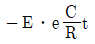
- E/e
(정답률: 57%)
16. 다음 중 Flip-Flop 회로를 쓰지 않는 것은?
- 리피터 회로
- 분주 회로
- 기억 회로
- 진 계수 회로
(정답률: 71%)
17. 다음 중 BCD 코드란?
- byte
- bit
- 2진화 10진 코드
- 10진화 2진 코드
(정답률: 75%)
18. 다음 회로와 등가인 회로는 어느 것인가?
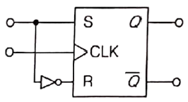
- RS 플립플롭
- JK 플립플롭
- D 플립플롭
- T 플립플롭
(정답률: 73%)
19. 다음 그림은 T F/F을 이용한 비동기 10진 상향계수기이다. 계수값이 10이 되었을 때 계수기를 0으로 하기 위해서는 전체 F/F을 clear시켜야 하는데 이렇게 하기 위해 (가)에 알맞은 게이트는?
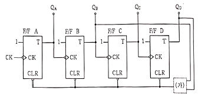
- OR
- AND
- NOR
- NAND
(정답률: 72%)
20. 멀티플렉서의 설명이 아닌 것은?
- 특정한 입력을 몇 개의 코드화된 신호의 조합으로 바꾼다.
- N개의 입력데이터에서 1개의 입력만 선택하여 단일 통로로 송신하는 장치이다.
- 멀티플렉서는 전환 스위치의 기능을 갖는다.
- 데이터 선택기라고도 한다.
(정답률: 60%)
2과목: 정보통신 시스템
21. 다음 중 지능망의 구성 요소가 아닌 것은?
- IP(Intellingent Peripheral)
- LBS(Location Base Service)
- SCP(Service Control Point)
- SSP(Service Switching Point)
(정답률: 67%)
22. 정보통신시스템은 크게 데이터 전송계와 데이터 처리계로 분리할 수 있다. 다음 중 데이터 전송계가 아닌 것은?
- 단말장치
- 통신 소프트웨어
- 데이터 전송회선
- 통신 제어장치
(정답률: 74%)
23. 국내의 통신망 발전 단계로 올바른 것은?
- ISDN → PSTN → BCN
- BCN → ISDN → PSTN
- PSTN → ISDN → BCN
- ISDN → BCN → PSTN
(정답률: 71%)
24. 핀테크(FinTech)란 금융(Finance)과 기술(Technology)의 합성어로, 금융과 IT의 융합을 통한 금융서비스 및 산업의 변화를 통칭한다. 다음 중 핀테크의 일반적인 구성 범위가 아닌 것은?
- 자금결제
- 금융데이터 분석
- 금융 소프트웨어
- 마그네틱 결제
(정답률: 78%)
25. PPP(Point-to-Point Protocol)에서 IP의 동적 협상이 가능하도록 하는 프로토콜은?
- NCP(Network Control Protocol)
- LCP(Link Control Protocol)
- SLIP(Serial Line IP)
- PPPoE(Point to Point Protocol over Ethernet)
(정답률: 66%)
26. 다음 중 BSC 프로토콜에서 사용되지 않는 방식은?
- 루프(Loop) 방식
- 반이중(Half Duplex)방식
- 포인트 투 포인트(Point-to-Point)방식
- 멀티포인트(Multipoint)방식
(정답률: 69%)
27. 인터넷 프로토콜 중 TCP/IP 계층은 ISO의 OSI 모델 7 계층 중 각각 어느 계층에 대응되는가?
- 인터넷계층 - 데이터링크계층
- 네트워크계층 - 세션계층
- 응용계층 - 물리계층
- 응용계층 - 표현계층
(정답률: 56%)
28. 표준화 단체인 IETF가 인터넷 표준화를 위한 작업문서를 무엇이라 하는가?
- RFC(Request For Comment)
- RFI(Request For Information)
- RFP(Request For Proposal)
- RFO(Request For Offer)
(정답률: 71%)
29. ISO/IEC JTC 1의 활동 중 SC21(OSI 상위계층/데이터베이스)에 활동하는 WG 설명으로 맞는 것은?
- WG1: OSI 관리
- WG4: OSI 구조
- WG5: 특정 응용 서비스
- WG8: 데이터베이스
(정답률: 60%)
30. 디지털 통신에서 펄스 성형(Pulse shaping)을 하는 주된 이유로 옳은 것은?
- 심볼간 간섭(ISI)를 줄이기 위함
- 노이즈를 줄이기 위함
- 다중접속을 용이하게 하기 위함
- 채널 대역폭을 증가시키기 위함
(정답률: 70%)
31. 패킷경로를 동적으로 설정하며, 일련의 데이터를 패킷단위로 분할하여 데이터를 전달하고, 목적지 노드에서는 패킷의 재순서화와 조립과정이 필요한 방식은?
- 회선교환방식
- 메시지교환방식
- 가상회선방식
- 데이터그램방식
(정답률: 66%)
32. 다음 중 10[Gbps] 동기식 전송시스템의 신호를 표시한 것은?
- STM-16
- STM-32
- STM-64
- STM-128
(정답률: 59%)
33. 다음 중 근거리통신망(LAN)에서 사용되는 채널할당방식에서 요구할당 방식에 해당되는 것은?
- ALOHA
- TDM
- CSMA/CD
- Token Bus
(정답률: 61%)
34. VAN의 서비스 기능 중 통신처리기능(통신처리계층)으로 틀린 것은?
- 패킷 교환
- 코드 변환
- 속도 변환
- 프로토콜 변환
(정답률: 42%)
35. 다음 중 센서 네트워크를 이용하여 유비쿼터스 환경을 구현하는 것을 목적으로 하는 것은?
- USN
- BcN
- TMN
- VAN
(정답률: 85%)
36. 다음 중 유용한 시스템이 가져야할 특성이라고 볼 수 없는 것은?
- 목적성
- 자동성
- 제어성
- 비선형성
(정답률: 83%)
37. 효율적인 정보통신시스템 유지보수 조직 운영 및 관리 방안 중 인력구성 계획단계에 해당하지 않은 것은?
- 운영 및 유지보수에 대한 지침을 이해한다.
- 운영 및 유지보수에 유경험자를 투입한다.
- 유지보수 업무 효율성을 극대화시키는 팀을 구성한다.
- 공사 시방서의 구축예정 물량을 확인한다.
(정답률: 75%)
38. 다음 중 TMN(Telecommunication Management Network)에서 정의하고 있는 5가지 관리 기능에 해당하지 않는 것은?
- 성능관리
- 보안관리
- 조직관리
- 구성관리
(정답률: 72%)
39. 다음 문장이 설명하는 것은 무엇인가?
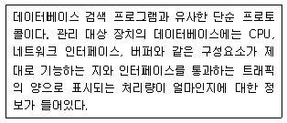
- DNS
- SNMP
- OSPS
- TCP/IP
(정답률: 70%)
40. 우리나라가 독자 개발한 대칭키 암호화 기술은 무엇인가?
- SEED
- RSA
- DES
- RC4
(정답률: 81%)
3과목: 정보통신 기기
41. 다음 내용에 해당하는 것은?
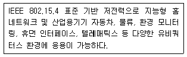
- Bluetooth
- Zigbee
- NFC
- RFID
(정답률: 78%)
42. 최단 펄스시간 길이가 1000x10-6[sec]일 때, 이 펄스의 변조속도는?
- 1[baud]
- 10[baud]
- 100[baud]
- 1000[baud]
(정답률: 82%)
43. 가입자선에 위치하고 단말기와 디지털 네트워크 사이의 인터페이스를 제공하며, 유니폴라 신호를 바이폴라 신호로 변환시키는 것은?
- DSU(Digital Service Unit)
- 변복조기(MODEM)
- CSU(Channel Service Unit)
- 다중화기
(정답률: 73%)
44. 1200[bps] 속도를 갖는 4채널을 다중화한다면, 다중화 설비 출력 속도는 적어도 얼마 이상이여야 하는가?
- 1200[bps]
- 2400[bps]
- 4800[bps]
- 9600[bps]
(정답률: 80%)
45. 다음 중 LAN의 구성요소로 틀린 것은?
- 전송매체
- 패킷교환기
- 라우터
- 네트워크 인터페이스 카드
(정답률: 41%)
46. 10Base-5 이더넷의 기본 규격으로 옳은 것은? (문제 오류로 가답안 발표시 3번으로 발표되었지만 확정 답안 발표시 2, 3번이 정답처리 되었습니다. 여기서는 가답안인 3번을 누르면 정답 처리 됩니다.)
- 전송 매체가 꼬임선이다.
- 전송 속도가 10[Mbps]이다.
- 전송 최대 거리가 500[m]이다.
- 전송 방식이 브로드밴드 방식이다.
(정답률: 81%)
47. 다음 중 회선 교환 방식의 설명으로 틀린 것은?
- 설정되면 데이터를 그대로 투과시키므로 오류 제어 기능이 없다.
- 데이터를 전송하지 않는 기간에도 회선을 독점하므로 비효율적이다.
- 회선을 전용선처럼 사용할 수 있어 많은 양의 데이터를 전송할 수 있다.
- 음성이나 동영상 등 실시간 전송이 요구되는 미디어 전송에는 적합하지 않다.
(정답률: 65%)
48. 사무실에서 인터넷 구내 망을 설치하여 음성전화 서비스를 제공하는 설비는?
- PBX
- IP-PBX
- ISDN-PBX
- Solo-PBX
(정답률: 75%)
49. 대용량 전자교환기에서 가장 많이 채택하고 있는 접속 제어 방식은?
- 자동 제어 방식
- 반전자 제어 방식
- 축적 프로그램 제어 방식
- 중앙 제어 방식
(정답률: 71%)
50. H.261의 화상통신에 대한 지원 포맷으로 맞는 것은?
- 106.52[dB]
- 4CIF, CIF
- CIF, QCIF
- Sub-QCIF, 4CIF
(정답률: 60%)
51. 다음 중 영상회의 시스템의 구성요소로 틀린 것은?
- 음향부
- 망용량 관리
- 제어부
- 편집부
(정답률: 65%)
52. 다음 중 IPTV 서비스를 위한 네트워크 엔지니어링과 품질 최적화를 위한 기능으로 맞지 않는 것은?
- 트래픽 관리
- 망용량 관리
- 네트워크 플래닝
- 영상자원 관리
(정답률: 72%)
53. FM 수신기 리미터의 역할로 가장 타당한 것은?
- 진폭 제한기
- 전류 증폭기
- 잡음 억제 회로
- 주파수체배기
(정답률: 68%)
54. 인공위성이나 우주 비행체는 매우 빠른 속도로 운동하고 있으므로 전파발진원의 이동에 따라서 수신주파수가 변하는 현상은?
- 페이지 현상
- 플라즈마 현상
- 도플러 현상
- 전파지연 현상
(정답률: 82%)
55. 다음 중 WCDMA 방식에 대한 설명으로 옳은 것은?
- 주파수 간격은 1.15[MHz]이다.
- GPS로 기지국간 시간 동기를 맞추어 전송한다.
- 서로 다른 코드로 기지국을 구분한다.
- 칩 전송속도는 5.2288[Mbps]이다.
(정답률: 69%)
56. 다음 중 이동통신에서 사용하는 셀 종류 중 가장 작은 것은?
- Mega Cell
- Pico Cell
- Macro Cell
- Micro Cell
(정답률: 78%)
57. 멀티디미어 데이터 압축기법 중 손실 압축 기법으로 틀린 것은?
- FFT(Fast Fourier Transform)
- DCT(Discrete Cosine Transform)
- DPCM(Differential Pulse Code Modulation)
- Huffman Code
(정답률: 77%)
58. 멀티미디어 서비스 활성화를 위한 CPND의 의미로 틀린 것은?
- C: Contents(콘텐츠)
- P: Platform(플랫폼)
- N: Network(네트워크)
- D: Digital(디지털)
(정답률: 82%)
59. 다음 중 멀티미디어 압축 기술로 틀린 것은?
- MIDI
- AVI
- JPEG
- MPEG
(정답률: 81%)
60. 다음 중 멀티미디어기기의 압축에 사용되는 방식이 아닌 것은?
- MPEG-1
- MPEG-2
- MPEG-4
- MPEG-21
(정답률: 81%)
4과목: 정보전송 공학
61. 다음 설명 중 틀린 것은?
- ADM은 양자화기의 스텝 크기를 입력신호에 따라 적응시키는 방법이다.
- PCM은 연속적인 아날로그 신호를 일정한 간격으로 샘플링 하는 방법이다.
- DM은 예측 값과 측정값의 차이를 양자화하는 변조 방법이다.
- DPCM은 진폭 값과 예측 값과의 차이만을 양자화하는 방법이다.
(정답률: 64%)
62. 양자화 잡음비(S/NQ)의 개선 방법으로 틀린 것은?
- 양자화 스텝을 크게 한다.
- 비선형 양자화 방법을 사용한다.
- 선형양자화와 압신방식을 같이 사용한다.
- 양자화 스텝수가 2배로 증가할 때마다 6[dB]씩 개선된다.
(정답률: 53%)
63. 10[GHz]의 직접확산 시스템이 20[kbaud]의 데이터 전송에 사용된다. 20[Mbps]의 확산부호를 BPSK 변조시킬 때 이 시스템의 처리이득은 얼마인가?
- 13[dB]
- 18[dB]
- 27[dB]
- 30[dB]
(정답률: 67%)
64. TDM을 사용하여 5개의 채널을 다중화 하려고 한다. 각 채널이 100[byte/s]의 속도로 전송하고 각 채널마다 2[byte]씩 다중화 하는 경우 초당 전송해야 하는 프레임수와 비트 전송률[bps]은 각각 얼마인가?
- 50개, 2000[bps]
- 50개, 4000[bps]
- 100개, 2000[bps]
- 100개, 4000[bps]
(정답률: 70%)
65. 트위스트 페어 케이블의 누설 콘덕턴스(G)는? (단, δ는 유전체의 손실각이다.)
- G = ωCsinɓ
- G = ωCtanɓ
- G = ωCcosɓ
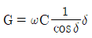
(정답률: 54%)
66. 스넬의 법칙(Snell's law)이란 광선 또는 전파가 서로 다른 매질의 경계면에 입사하여 통과할 때 입사각과 굴절각과의 관계를 표현한 법칙이다. 다음 그림과 같이 굴절률이 n1과 n2로 서로 다른 두 매질이 맞닿아 있을 때 매질을 통과하는 빛의 경로는 매질마다 광속이 다르므로 휘게 되는데, 그 휜 정도를 빛의 입사 평면상에서 각도로 표시하면 θ1과 θ2가 된다. 이때 스넬의 법칙으로 n1, n2, θ1, θ2의 상관관계를 올바르게 정의한 것은?
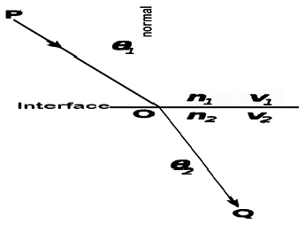
- n1+cosθ1 = n2+sinθ2
- n1+cosθ2 = n2+sinθ2
- n1(sinθ1) = n2(sinθ2)
- n1(sinθ2) = n2(sinθ1)
(정답률: 76%)
67. 다음 중 전송로 상의 구조 분산(도파로 분산)에 대한 설명으로 틀린 것은?
- 광섬유의 구조에 변화가 생겨 빛과 광케이블이 이루는 각이 파장에 따라 변해서 발생
- 실제 전송로의 경로의 길이에 변화가 발생하게 되고 도착 시간의 차이가 발생
- 광 펄스가 옆으로 퍼지는 현상
- 모드 사이의 전달되는 전파속도 차이 때문에 발생하는 분산
(정답률: 54%)
68. 제한대역매체를 통해 기본파와 제3고조파를 포함하는 디지털 신호를 전송하는데 필요한 대역폭은 얼마인가? (단, n[bps]로 디지털 신호를 보내고자 한다.
- n[Hz]
- 2n[Hz]
- 4n[Hz]
- 6n[Hz]
(정답률: 68%)
69. 다음 중 밀리미터파의 특징으로 틀린 것은?
- 저전력 사용
- 우수한 지향성
- 낮은 강우 감쇠
- 송수신장치의 소형화
(정답률: 61%)
70. 다음 중 비동기 전송방식의 특징이 아닌 것은?
- 저속도의 EIA-232D 데이터 전송에 주로 사용
- 긴 데이터 비트 열을 연속적으로 전송하는 방식
- 수신기가 각각 새로운 문자의 시작점에서 재동기를 수행
- 매 문자마다 Start, Stop 비트를 부가하여 전송
(정답률: 58%)
71. 다음 중 혼합형 동기방식의 특징으로 틀린 것은?
- 비동기식보다 전송속도가 빠르다.
- 글자와 글자 사이에는 휴지시간이 없다.
- 각 글자가 스타트 비트와 스톱 비트를 가진다.
- 동기식과 비동기식의 전송 특성을 혼합한 것이다.
(정답률: 71%)
72. 다음 데이터 통신방식 중 반이중 방식의 설명으로 틀린 것은?
- 2선식 전송로를 이용하며 어느 시점 한 방향으로만 데이터를 전송
- 전송 데이터 양이 적을 때 사용
- 데이터 전송방향을 바꾸는데 소요되는 시간인 전송 반전 시간 필요
- 전이중 방식보다 전송효율이 높은 특성을 보유
(정답률: 76%)
73. 다음 중 HDLC 전송 프로토콜의 국 사이에서 교환되는 데이터 전송 단위는?
- 데이터그램
- 프레임
- 비트
- 패킷
(정답률: 67%)
74. 다음 중 IP의 특성이 아닌 것은?
- 비접속형
- 신뢰성
- 주소 지정
- 경로 설정
(정답률: 70%)
75. 다음 중 CIDR(Classless Inter-Domain Routing)에 대한 설명으로 틀린 것은?
- 인터넷을 단일 계층구조로 만들어 효율적인 네트워킹을 지원한다.
- 별도 서브넷팅 없이 내부 네트워크를 임의로 분할할 수 있다.
- 소수의 라우팅 항목으로 다수의 네트워크를 표현할 수 있다.
- 네트워크 식별자 범위를 자유롭게 지정할 수 있다.
(정답률: 35%)
76. 다음 중 UDP에 대한 설명으로 옳지 않은 것은?
- 신뢰성을 제공하지 않는다.
- 연결설정 없이 데이터를 전송한다.
- 연결 등에 대한 상태 정보를 저장하지 않는다.
- TCP에 비해 오버헤드의 크기가 크다.
(정답률: 78%)
77. 다음 중 동적 라우팅(Dynamic Routing)에 사용되는 프로토콜은?
- HTTP
- PPP
- OSPF
- SMTP
(정답률: 55%)
78. OSI 7계층 중 2계층인 데이터링크 계층(Data link Layer)의 기능이 아닌 것은?
- 입출력제어
- 회선제어
- 동기제어
- 세션제어
(정답률: 68%)
79. 전송제어 프로토콜 중 HDLC 프로토콜의 프레임구조에서 어드레스(Address)부의 모든 비트가 1인 경우를 무엇이라 하는가?
- No Station Address
- Destination Address
- Source Address
- Global Address
(정답률: 65%)
80. 다음 중 FEC(Forward Error Correction)의 특징이 아닌 것은?
- 역 채널을 사용하지 않는다.
- 연속적 데이터 전송이 가능하다.
- 오류가 발생시 패킷을 재전송한다.
- 잉여 비트에 의한 전송채널 대역이 낭비된다.
(정답률: 49%)
5과목: 전자계산기일반 및 정보통신설비기준
81. 다음 중 DMA(Direct Memory Access)에 대한 설명으로 틀린 것은?
- 주변 장치와 기억장치 등의 대용량 데이터 전송에 적합하다.
- 프로그램 방식보다 데이터의 전송속도가 느리다.
- CPU의 개입 없이 메모리와 주변장치 사이에서 데이터 전송을 수행한다.
- DMA 전송이 수행되는 동안 CPU는 메모리 버스를 제어하지 못한다.
(정답률: 66%)
82. 다음 중 선택된 트랙에서 데이터를 Read 또는 Write하는데 걸리는 시간은?
- Seek Time
- Search Time
- Transfer Time
- Latency Time
(정답률: 62%)
83. 특수한 연필이나 수성펜 등으로 사람이 지정된 위치에 직접 표시한 것을 광학적으로 읽어내는 장치는?
- 디지타이저(Digitizer)
- 광학 표시 판독기(OMR)
- 광학 문자 판독기(OCR)
- 자기 잉크 문자 판독기(MICR)
(정답률: 77%)
84. 2진수 0011에서 2의 보수(2‘s Complement)는?
- 1100
- 1110
- 1101
- 0111
(정답률: 79%)
85. 자료의 병렬전송을 직렬전송으로 변경하는 레지스터는?
- 명령 레지스터(IR)
- 메모리 주소 레지스터(MAR)
- 메모리 버퍼 레지스터(MBR)
- 쉬프트 레지스터(Shift Register)
(정답률: 75%)
86. ASCII 코드의 존(Zone)비트와 디지트(Digit) 비트의 구성으로 올바른 것은?
- 존 비트: 2, 디지트 비트: 3
- 존 비트: 3, 디지트 비트: 3
- 존 비트: 3, 디지트 비트: 4
- 존 비트: 4, 디지트 비트: 4
(정답률: 73%)
87. 다음 중 운영체제의 기능으로 틀린 것은?
- 프로세스의 생성, 제거, 중지 등을 다루는 프로세스 관리
- 프로세스의 적재와 회수를 다루는 기억장치 관리
- 입출력 장치의 상태를 파악하는 입출력 장치 관리
- 문서의 작성과 수정, 삭제 등에 관한 사용자 업무처리 관리
(정답률: 71%)
88. 다음 중 프로그램 언어에 대한 설명으로 틀린 것은?
- 하드웨어가 이해할 수 있는 언어를 기계어라고 부른다.
- 고급언어로 작성된 프로그램은 기계어로 변환해야 실행이 가능하다.
- C, PASCAL, FORTRAN 등은 고급언어이다.
- 어셈블리어는 기계어라고 부른다.
(정답률: 64%)
89. 다음의 내용은 마이크로프로세서의 동작을 나타낸 것이다. 동작순서를 바르게 표기한 것은?
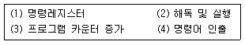
- (3) - (4) - (1) - (2)
- (4) - (1) - (2) - (3)
- (3) - (1) - (4) - (2)
- (4) - (2) - (3) - (1)
(정답률: 55%)
90. 클럭의 주파수가 1[GHz]이고, 명령어 200개를 실행시키고자 한다. 이때 클럭 주기는 얼마인가?
- 0.1[ns]
- 1[ns]
- 10[ns]
- 100[ns]
(정답률: 48%)
91. 정보통신의 표준화에 관한 업무를 효율적으로 추진하기 위하여 과학기술정보통신부장관의 인가를 받아 설립된 기관은?
- 한국정보통신기술협회
- 한국정보화진흥원
- 국립전파연구원
- 한국방송통신전파진흥원
(정답률: 70%)
92. 다음 중 전력선통신을 행하기 위한 방송통신설비가 갖추어야 할 기능으로 옳은 것은?
- 전력선과의 접속부분을 안전하게 분리하고 이를 연결할 수 있는 기능
- 전력선으로부터 이상전류가 유입된 경우 접지될 수 있는 기능
- 단말기의 전력분배 기능
- 주장치의 이상 현상으로부터 보호할 수 있는 기능
(정답률: 61%)
93. 다음 중 보호기와 금속으로 된 주배선반·지지물·단자함 등이 사람 또는 방송통신설비에 피해를 줄 우려가 있을 때에 하는 시설은?
- 보안시설
- 통전시설
- 절연시설
- 접지시설
(정답률: 74%)
94. 다음 중 인터넷접속역무 제공사업자가 이용사업자에게 공개해야 하는 인터넷접속조건에 해당하지 않는 것은?
- 상호접속료
- 통신망 규모
- 가입자 수
- 트래픽 교환비율
(정답률: 55%)
95. 방송통신설비가 이에 접속되는 다른 방송통신설비의 위해 등을 방지하기 위한 대책으로 적합하지 않은 것은?
- 전력선통신을 행하는 방송통신설비는 이상전압이나 이상전류에 대한 방지대책이 요구되지 않는다.
- 다른 방송통신설비를 손상시킬 우려가 있는 전류가 송출되는 것이어서는 아니 된다.
- 다른 방송통신설비의 기능에 지장을 주는 방송통신콘텐츠가 송출되어서는 아니 된다.
- 다른 방송통신설비를 손상시킬 우려가 있는 전압이 송출되는 것이어서는 아니 된다.
(정답률: 77%)
96. 발주자는 누구에게 공사의 감리를 발주하여야 하는가?
- 감리원
- 정보통신기술자
- 용역업자
- 도급업자
(정답률: 66%)
97. 다음 중 전기통신사업법에서 정하는 “기간통신역무”에 대한 사항으로 옳지 않은 것은?
- “기간통신역무”와의 전기통신역무는 “부가통신역무”라 말한다.
- 전화·인터넷접속 등과 같이 음성·데이터·영상 등을 그 내용이나 형태의 변경 없이 송신 또는 수신하게 하는 전기통신역무를 말한다.
- 음성·데이터·영상 등의 송신 또는 수신이 가능하도록 전기통신회선설비를 임대하는 전기통신역무를 말한다.
- 전화·인터넷접속 등과 같이 음성·데이터·영상 등의 내용이나 형태를 적합한 형태로 변경하여 송신 또는 수신하게 하는 전기통신역무를 말한다.
(정답률: 41%)
98. 다음 중 별정통신사업의 등록요건이 아닌 것은?
- 납입자본금 등 재정적 능력
- 기술방식 및 기술인력 등 기술적 능력
- 이용자 보호계획
- 정보통신자원 관리계획
(정답률: 46%)
99. 다음 중 가장 무거운 벌칙을 처벌받는 대상은?
- 전기통신업무 종사자가 재직 중에 통신에 관하여 알게 된 타인의 비밀을 누설한 자
- 전기통신사업자가 취급 중에 있는 통신의 비밀을 침해한 자
- 전기통신사업자가 전기통신설비의 제공으로 취득한 이용자의 정보를 제3자에게 제공한 자
- 전기통신사업자가 제공하는 전기통신역무를 이용하여 타인의 통신을 매개한 자
(정답률: 55%)
100. 다음 중 용어의 정의가 맞지 않는 것은?
- “강전류절연전선”이라 함은 절연물만으로 피복되어 있는 강전류 전선을 말한다.
- “전자파공급선”이라 함은 전파에너지를 전송하기 위하여 송신장치나 수신장치와 안테나 사이를 연결하는 선을 말한다.
- “회선”이라 함은 전기통신의 전송이 이루어지는 유형 또는 무형의 계통적 전기통신로를 말하며, 그 용도에 따라 국선 및 구내선 등으로 구분한다.
- “중계장치”라 함은 선로의 도달이 어려운 지역을 해소하기 위해 사용하는 증폭장치 등을 말한다.
(정답률: 58%)
반도체 다이오드는 양방향으로 전류가 흐를 수 있지만, 일반적으로는 한 방향으로만 전류가 흐르도록 사용됩니다. 이때 다이오드에 전압을 인가하여 전류를 흐르게 하는 것을 바이어스(Bias)라고 합니다.
순방향 바이어스는 다이오드의 양끝에 양극성 전압을 인가하여 전류가 흐르도록 하는 것을 말하며, 역방향 바이어스는 다이오드의 양끝에 음극성 전압을 인가하여 전류가 흐르지 않도록 하는 것을 말합니다.
따라서, "순방향과 역방향"이 정답이 되는 것입니다.